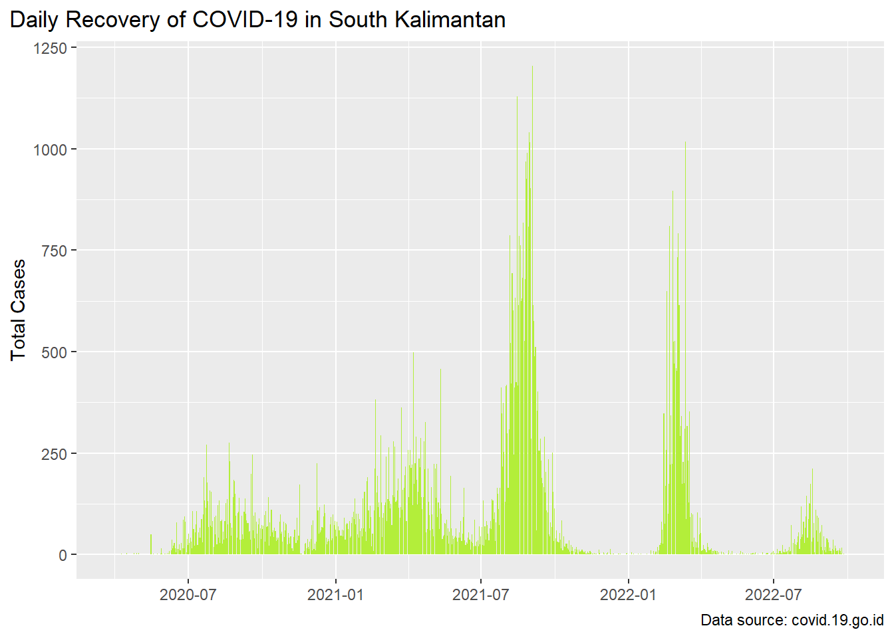
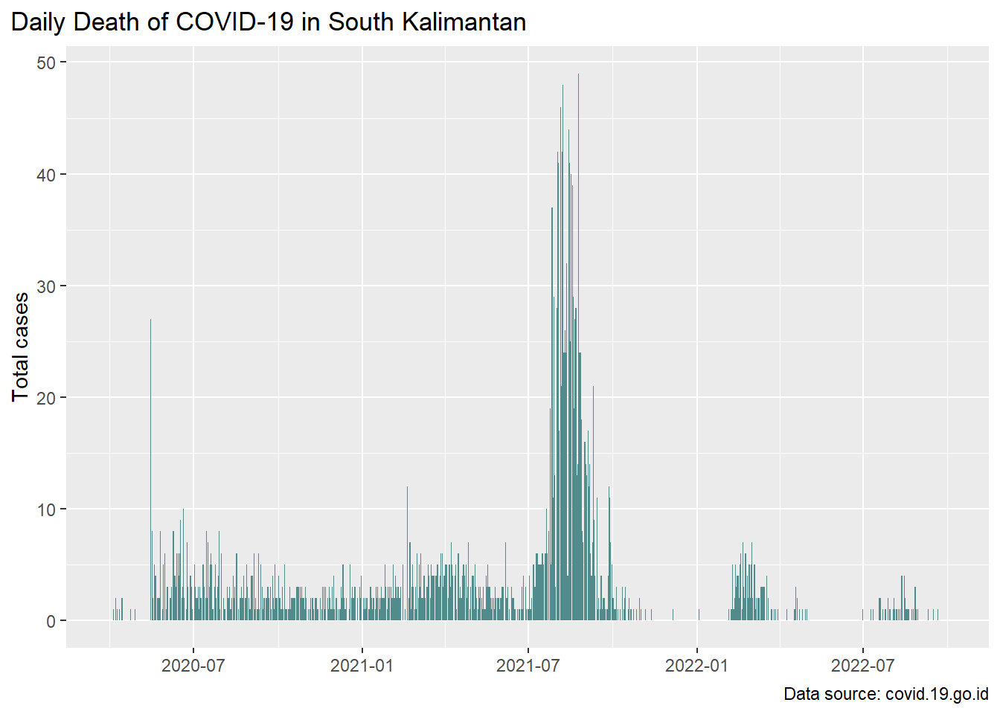
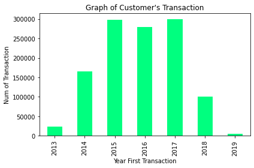
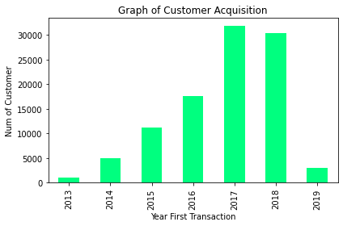
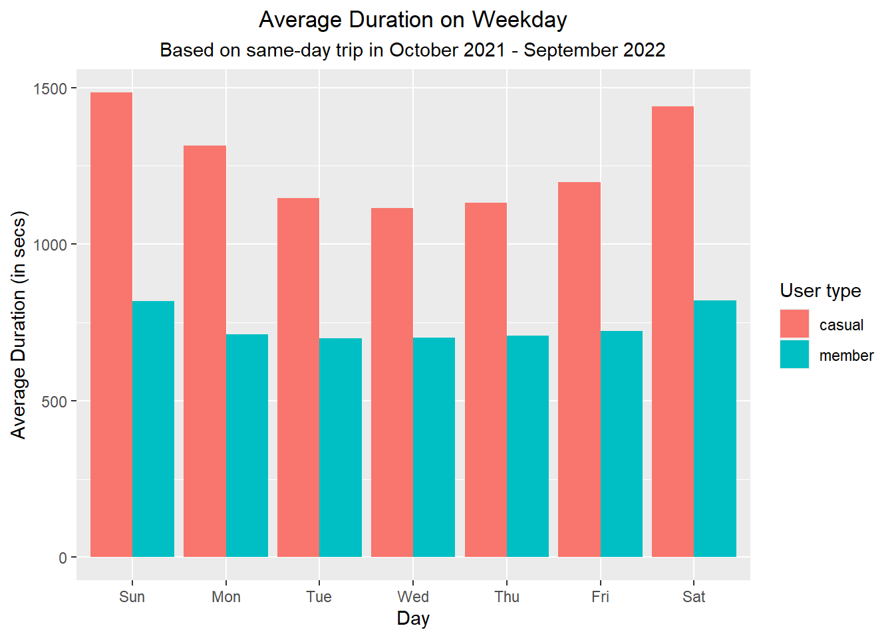
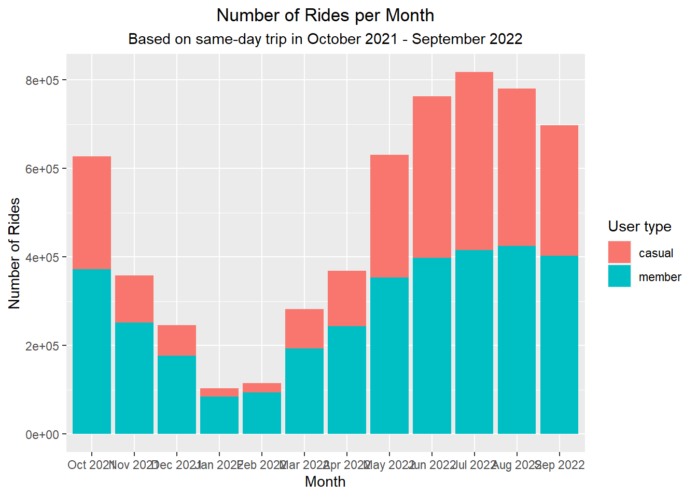
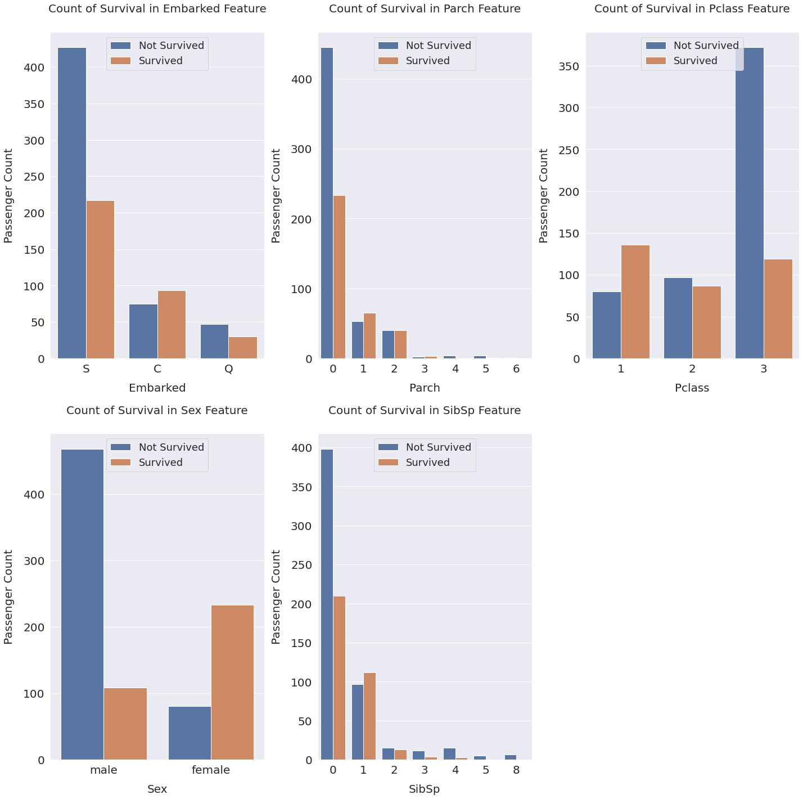

Hello, Welcome to my website!
An IT Enthusiast based in Jakarta, Indonesia.
An IT Enthusiast based in Jakarta, Indonesia.
This project is adapted from Data Science for Beginners by DQLab and Digitalent Scholarship. This project analyzes the development of COVID-19 in South Kalimantan, Indonesia.
Preview:
 This project is part of DQLab Data Analyst Python Track. The main goal of this project is defining a customer as not a customer (churn) based on the last transaction for the last six months since the last available data update.
Preview:
 This project is a part of Google Data Analytics Professional Certificate. The goal of this project is analyzing the differences between annual members and regular riders in September 2022.
Preview:
 This project is a challenge from Kaggle. The sinking of the Titanic is one of the most infamous shipwrecks in history. On April 15, 1912, during her maiden voyage, the widely considered “unsinkable” RMS Titanic sank after colliding with an iceberg. In this challenge, I build a predictive model using feature engineering based on DQLab’s project that answers the question: “what sorts of people were more likely to survive in Titanic sink?” using passenger data (ie name, age, gender, socio-economic class, etc).
Preview:
